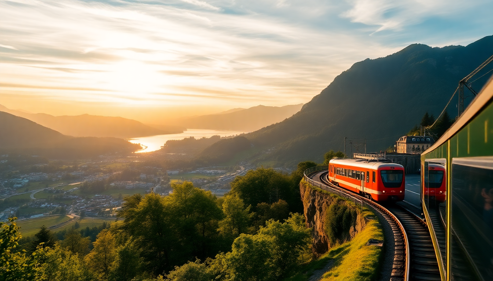

How to Get Around Switzerland: Swiss Travel Pass & Scenic Trains

I landed in Zurich with a vague plan and a heavy backpack, assuming I’d just figure out Swiss trains at the station. Three weeks later, I’d wasted about 200 francs on last-minute tickets and stood on the wrong platform for the Glacier Express. This guide is what I wish I’d read before I left — the real math on the Swiss Travel Pass, which scenic trains are worth the hype, and exactly how to get between Zurich, Lucerne, Interlaken, and Zermatt without blowing your budget.
Should I buy the Swiss Travel Pass or point-to-point tickets?
The Swiss Travel Pass is a flat-rate ticket for unlimited travel on most trains, buses, and boats, plus free entry to over 500 museums. I bought the 4-day pass for 232 CHF (second class), and it paid off by day three. If you’re moving between cities every day and hitting a few museums or mountain excursions, the pass saves serious cash.
For a slower trip — say, two nights in one city with no day trips — point-to-point tickets through the SBB app are cheaper. I paid 52 CHF for a single Zurich-to-Interlaken ticket when booked a week ahead, which is less than the daily cost of the pass. Just avoid buying at the counter on the day of travel; same ticket was 89 CHF on the spot.
Key factors to decide:
- Swiss Travel Pass — best for 4+ travel days in 30 days, includes mountain excursions on Rigi and Stanserhorn
- Half-Fare Card (120 CHF for 30 days) — if you’re staying put in one city but taking 3+ day trips
- Point-to-point via SBB app — cheapest for 1-2 long journeys booked in advance
- Supersaver tickets — non-refundable, but I snagged a Bern-to-Zurich run for 19 CHF
How do I actually use the Swiss Travel Pass on scenic trains?
You don’t just flash the pass and hop on. The Glacier Express, Bernina Express, and GoldenPass require a separate seat reservation, which costs 33-49 CHF per person per train. The pass covers the base fare, but the reservation fee is non-negotiable. I skipped the Glacier Express because the reservation fee plus the 8-hour ride felt overhyped — the regular IR train between Zermatt and St. Moritz uses the same tracks for half the price.
The GoldenPass from Montreux to Interlaken is the exception. The panoramic cars don’t require a reservation if you’re on the regular InterRegio service (same route, same windows, no supplement). I sat in the second car from the front on the left side for the best lake views, and it cost zero extra.
Scenic trains ranked by value (with Swiss Travel Pass):
- GoldenPass (Montreux–Interlaken) — free with pass, no reservation needed on IR trains
- Bernina Express (Chur–Tirano) — worth the 33 CHF reservation for the spiral viaducts
- Glacier Express (Zermatt–St. Moritz) — overpriced reservation; take the regular IR instead
- Gotthard Panorama Express (Lucerne–Lugano) — includes a boat ride, reservation 49 CHF
What’s the best way to get from Zurich to Lucerne?
Forty-five minutes, direct, no frills. I caught the IC train from Zurich HB platform 5 toward Bern, and it dropped me at Lucerne station right on the lake. Tickets are 25-35 CHF if booked a few days out, or free with the Swiss Travel Pass. Sit on the left side for views of Lake Zug and the Rigi massif as you roll in.
In Lucerne, skip the tourist-trap fondue at the Lion Monument and walk five minutes to Brasserie Bodu on the Reuss River for a decent cordon bleu. The Chapel Bridge is pretty but packed by 10 a.m. — go at 7:30 a.m. when the light hits the water towers. For a quick view, pay 5 CHF for the lift up the Château Gütsch hotel terrace; it’s quieter than the city walls.
Lucerne quick stops:
- Lion Monument — fine for a photo, but don’t plan more than 10 minutes
- Swiss Transport Museum — included with Swiss Travel Pass, good for a rainy afternoon
- Hotel Schweizerhof Luzern — overpriced for the rooms, but their lakeside bar is a solid coffee stop
How do I get from Lucerne to Interlaken, and is it scenic?
The direct GoldenPass line from Lucerne to Interlaken takes about two hours and is one of the best train rides I’ve done in Switzerland. No reservation needed with the Swiss Travel Pass. You climb from Lucerne through the Brünig Pass, then drop into the Hasli Valley with the Aare River running alongside. Sit on the right side from Lucerne for the best mountain views.
I arrived at Interlaken Ost station and walked ten minutes to Hotel Harder Minerva, a no-frills spot on the main street. The room was small but the breakfast buffet had real bread and cheese, not the packaged stuff. Avoid the Höheweg strip at dinner time — it’s all overpriced steak houses. Instead, walk ten minutes to Restaurant Tenne for a proper rösti with an egg on top.
Interlaken logistics:
- Interlaken Ost — main station for trains to Grindelwald and Lauterbrunnen
- Interlaken West — smaller, closer to the lake piers for boat tours
- Harder Kulm funicular — 32 CHF round trip, not covered by Swiss Travel Pass but worth it for sunset
Is Zermatt worth the trip from Interlaken, and how do I get there?
Yes, but it’s a haul. From Interlaken Ost, take the IC to Visp (1 hour, 50 minutes), then switch to the narrow-gauge Matterhorn Gotthard Bahn up to Zermatt (another hour). Total time: about 3 hours each way. With the Swiss Travel Pass, the base fare is covered, but the section from Visp to Zermatt costs an extra 20 CHF supplement — pay at the machine before boarding.
Zermatt itself is car-free and feels like a movie set. I stayed at Hotel Alpenhof near the station — basic rooms but a balcony facing the Matterhorn. The town is expensive; I paid 14 CHF for a beer at Brown Cow Pub and regretted it. Better to grab a bottle at Coop on the main street and drink it on the bridge over the Vispa river.
Zermatt tips:
- Gornergrat Railway — 47 CHF with Swiss Travel Pass, 90 CHF without; go for sunrise, not midday
- Matterhorn Glacier Paradise — overpriced at 100 CHF; the view is the same from Gornergrat
- Restaurant Walliserkanne — decent raclette for 25 CHF, book a day ahead
FAQ
Can I use the Swiss Travel Pass on buses and boats? Yes. It covers all SBB buses, plus lake boats on Lake Lucerne, Lake Zurich, and Lake Geneva. I took the boat from Lucerne to Weggis for free and hiked up to Rigi — the pass also covers that mountain railway. Just don’t try it on post buses in remote valleys; those need a separate ticket.
Is the Swiss Travel Pass worth it for a 7-day trip? If you’re moving cities every 2-3 days, yes. I did Zurich (2 nights), Lucerne (2 nights), Interlaken (2 nights), Zermatt (1 night) and the 8-day pass at 440 CHF saved me about 150 CHF compared to buying point-to-point. But if you’re based in one city with only 2-3 day trips, the Half-Fare Card is cheaper.
Do I need to book scenic train reservations in advance? For the Glacier Express and Bernina Express, yes — book at least 2-3 weeks ahead in summer, or you’ll pay the reservation fee and still get stuck in a crowded car. For the GoldenPass, no reservation is needed on the regular IR trains, and the panoramic cars are rarely full outside July.
Conclusion
- The Swiss Travel Pass pays for itself if you take 3+ long train days or hit 2-3 museums
- GoldenPass from Montreux to Interlaken is the best scenic value — free with pass, no reservation needed
- Skip the Glacier Express and take the regular IR train for the same views at half the cost
- Book point-to-point tickets in the SBB app for short stays or single journeys, not at the counter
- Zermatt is worth the detour, but eat at Coop and skip the Glacier Paradise